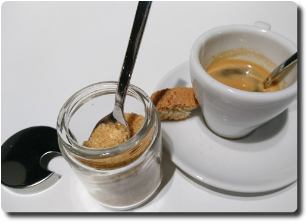
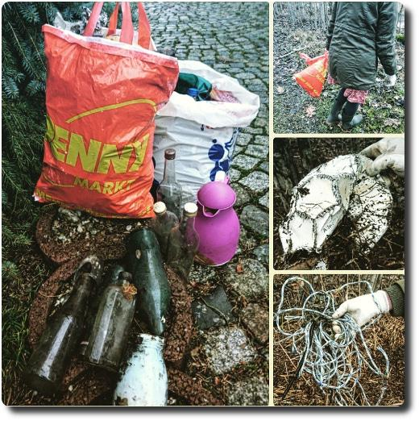

Hallo Nikola
Hallo Welt, hallo Nikola!
Hallo Welt, hallo Nikola!
Gestern haben wir das Geldmuseum in Frankfurt/Main besucht. Im zugehörigen Café hat es mich total gefreut, dass dort der Zucker in kleinen Gläschen zu haben war. Oftmals gibt es ihn ja stattdessen in solchen Einweg-Aufreißverpackungen, was die Müllberge schnell anwachsen lässt. Hier aber nicht. Daumen hoch! 👍😊💚
Ach ja, die Ausstellung war auch total interessant. Wer mal in der Finanzmetropole Frankfurt zu Besuch ist, sollte sie sich nicht entgehen lassen!
Eine neue Aufräumaktion, diesmal am See bei meinen Eltern. Hat leider nur 10 Minuten gedauert, bis die zwei Beutel randvoll waren... 😣 Auch Glasflaschen ohne Ende. Grrr
Das habe ich mich in den vergangenen Wochen und Monaten oft gefragt. Im Laden bekommt man ja auf die Schnelle eigentlich nie genau das Produkt, welches man sich vorgestellt hat. Die Preise sind meistens höher als im Internet. Man muss persönlich rausgehen, wobei das Wetter es auch nicht immer gut mit einem meint. Bestellte Ware muss man selber abholen. Die Beratung ist oftmals unter aller Sau, und Garantiefälle werden im Internet schon lange sehr viel verbraucherfreunlicher bearbeitet. In einem realen Geschäft einkaufen gehen – warum tu ich mir das eigentlich noch an?
Über die Weihnachtsfeiertage habe ich mir das Buch Das Fahrrad von Hans-Erhard Lessing (erschienen im Klett-Cotta Verlag) gegönnt. Ein sehr ausführliches Buch über die Geschichte des Zweirades, sehr ansprechend geschrieben mit vielen Hintergrundinfos. Ich würde 4 von 5 Sternen geben würde. 😊
Für jeden nur halbwegs Radinteressierten birgt dieses Buch unglaublich viele Informationen. Außerdem ist es sehr unterhaltsam geschrieben. Ich kann mir vorstellen, dass es ein tolles Geschenk zu Weihnachten ist. Die stehen ja schon fast wieder vor der Tür. Höhö... klare Empfehlung also, wenn man mich fragt. 👍
Hier die liste der geschauten Filme im Dezember:
Was für ein gutes Interview in der Frankfurter Rundschau mit dem Ornithologen Peter Berthold! Unbedingt lesen (aber Zeit mitbringen).
Der Autor Jürgen Roth hat mit Herrn Berthold über die Chlorophyll-Krankheit, das langsame Sterben des Feldhamsters und die Idiotie der Monokulturen gesprochen.
Hier die liste der geschauten Filme im November:
Braucht ihr noch ein geekiges Weihnachtsgeschenk? Wie wäre es mit einem QR-Code Topflappen oder einem Untersetzer? Aber stricken müsst ihr ihn selbst. :-D

Hier die liste der geschauten Filme im Oktober: